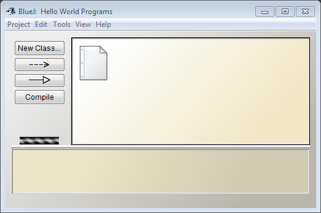
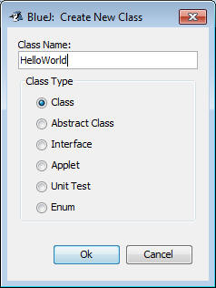
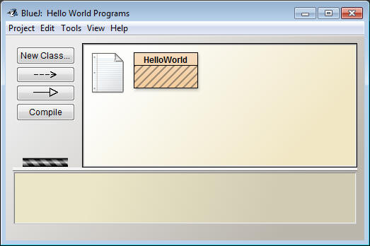
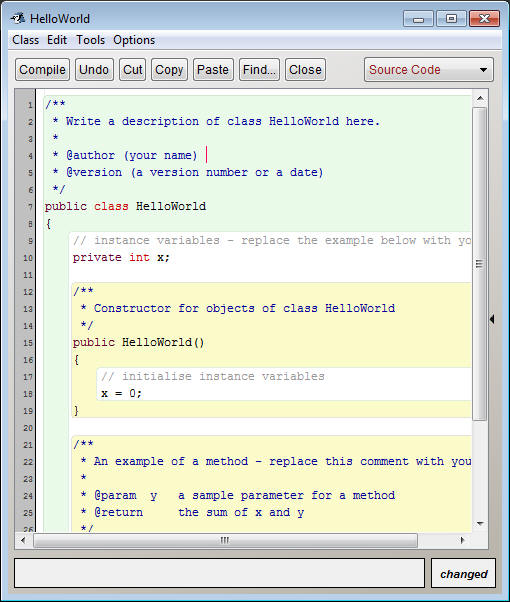
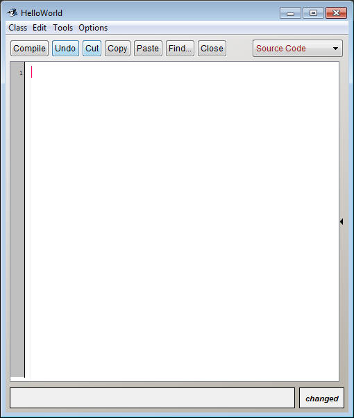
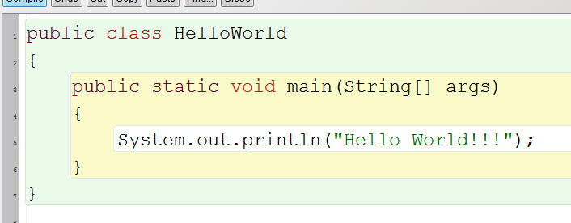
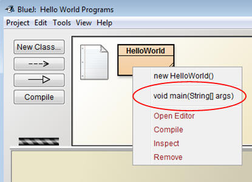
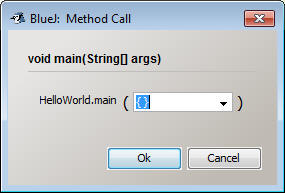
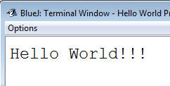

Your First Program: Hello World
Setting Up a Folder System:
Before you get started, create a new folder somewhere on your computer and name it "Computer Science Projects". This is where all of your projects for this class will go. It is important that you keep it organized because you will be creating lots of programs and may need to find them later.
Inside the Computer Science Projects folder, create another folder named "Unit 1 - Beginning Java". Each time we move on to a different unit, create another folder like this.
Setting Up a BlueJ Project:
Open BlueJ, then click the Project menu and select New Project. Navigate to the "Unit 1 - Beginning Java" folder and create a project with the name "Hello World Programs". A project is like a special folder that will hold a group of programs. Often you will get a group of programs at once, and each time you should create a new project to hold them.

Creating a New Class:
For now, each program that you create will have its own class file. Click the New Class button. In the menu that pops up, make HelloWorld the title. Your class names should be capitalized and contain no spaces.

Click Ok to create the class. It will appear as a rectangle in BlueJ.

Open the class by either double-clicking the rectangle or right clicking it and choosing open. BlueJ will have already filled it with some "helpful" text... delete all of it.


Writing the Program:
Fill in the text of the program to be exatcly as it's written below:

Compile the program:
Before you can run a program, you must Compile it. Compiling a program essential asks Java if it understands what is written and can convert it to a program for you. It is very very picky. Hit the compile button. If you get a message that says "Class compiled - no syntax errors", that means that it can be run as a program. If anything is wrong, you will get a different error message along with the line number assosciated with it. These aren't always very clear. Try it out. Delete anything that isn't in between the quotation marks and try to compile. An error will pop up.
Running the program:
If you go back to your project window, you will notice that the HelloWorld rectangle no longer has diagonal lines through it. This means that the class is compiled and ready to run. In the code, you created one method (an action that the program can do). The name of it is main. Right click the HelloWorld class and select the main method.

A small window will pop up. Simply leave it how it is and click Ok.

If all goes well, the terminal window should pop up and contain the text Hello World!!!

Congratulations! You've created your first program!
Making Your Life Easier:
In the program above, you created a program that has one method with the header public static void main(String[] args). Eventually, if you want your program to run outside of BlueJ, it needs to have one method with this exact header. BlueJ doesn't require it to be named exactly this way, and using the String[] args actually requires an extra step from you.
Go back and change the code to say public static void main() . This time the String[] args is left out. Now compile and run the method again. No window will pop up and the program should still run. In this class you won't ever need the String[] args, but it's good to know about if you take your Java education further.